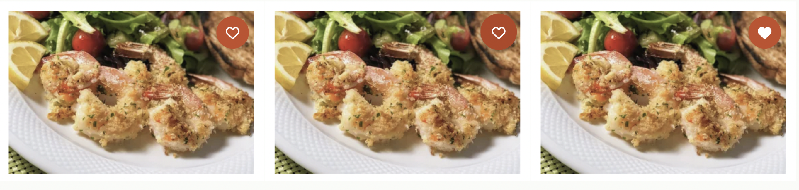

Allrecipes Microinteraction Final Description
Triggers
- Hover on/off favorite icon on recipe card
- Click favorite icon on recipe card
- Click on 'Add to collection' button
- Located on the right side of the toast notification that appears when the user clicks the favorite icon
- Click X icon to close 'Add to collection' menu
- Click collection item on 'Add to collection' menu
Rules
Hover on:
- Cursor change into pointer
- Circle becomes 10% bigger
- Red darkens in color by 10%
Hover off:
- Pointer change into cursor
- Circle becomes 10% smaller
- Red darkens in color by 10%
Click on heart icon (Save):
- Heart shape becomes filled
- Heart shape scales up 1.25% and then scales down 1.25%
- Favorite icon pressed = true is saved in backend
- Toast notification that says "Saved to liked" slides up and expands from bottom of screen, stays on screen for 10 seconds, and then slides down out of the screen
Click on heart icon(Unsave):
- Heart shape becomes unfilled
- Heart shape scales down 1.25% and then scales up 1.25%
- Favorite icon pressed = false is saved in backend
- Toast notification that says "Removed from liked'" slides up and expands from bottom of screen, stays for 10 seconds, and then slides down out of the screen
Click on 'Add to collection' button
- Menu of possible collections slides up from bottom of screen
Click on a category item on 'Add to collection' menu
- Toast notification that says "Saved from liked'" slides up and expands from bottom of screen, stays for 10 seconds, and then slides down out of the screen
- Menu of possible collections slides up from bottom of screen
Click on X icon next to menu
- Menu of possible collections slides down from bottom of screen
Feedback
Hover on:
- Cursor change into pointer
- Circle becomes 10% bigger
- Red darkens in color by 10%
Hover off:
- Pointer change into cursor
- Circle becomes 10% smaller
- Red darkens in color by 10%
Click on heart icon (Save):
- Heart shape becomes filled
- Heart shape scales up 1.25% and then scales down 1.25%
- Favorite icon pressed = true is saved in backend
- Toast notification that says "Saved to liked" slides up and expands from bottom of screen, stays on screen for 10 seconds, and then slides down out of the screen
Click on heart icon(Unsave):
- Heart shape becomes unfilled
- Heart shape scales down 1.25% and then scales up 1.25%
- Favorite icon pressed = false is saved in backend
- Toast notification that says "Removed from liked'" slides up and expands from bottom of screen, stays for 10 seconds, and then slides down out of the screen
Click on a category item on 'Add to collection' menu
- Toast notification that says "Saved from liked'" slides up and expands from bottom of screen, stays for 10 seconds, and then slides down out of the screen
Click on 'Add to collection' button
- Menu of possible collections slides up from bottom of screen
Click on X icon next to menu
- Menu of possible collections slides down from bottom of screen
Loops and Modes
- Menu appears on click and disappears when the X icon is pressed
Hover states
Click: Save a recipe


Click: Remove a recipe


Click: Add to Collection